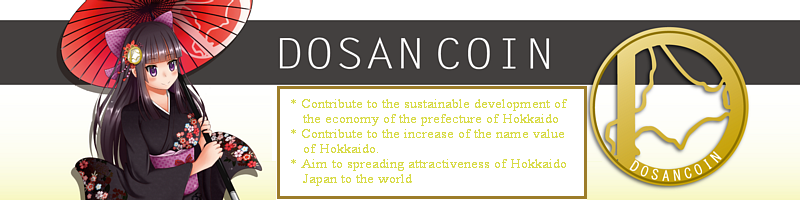

Dosancoin (Ticker: DOS)
News
5th January 2021 -- The Dosancoin (DOS) Community Team holds "UniSwap Trading contest" in January, 2021
Welcome to Dosancoin website
DosanCoin (DOS) is a community token which purpose is to develop the economy of the prefecture of Hokkaido, Japan and increase the name value of it.
It is also a cryptographic asset created for the purpose of creating and supplying stable value as a currency and contributing to the economic development of the prefecture of Hokkaido, Japan and other Asian countries through crypto currency, in other words, spreading the attractiveness of Hokkaido, Japan to the world.
[Dosanko] means people originally from the prefecture of Hokkaido, Japan.
wDOS is a "waves" platform version token of [DosanCoin].
----
DOS (ERC20)
0x9aCbcA1B2F4EcFAe110B14bace23bAE23A39fdc6
https://etherscan.io/token/0x9acbca1b2f4ecfae110b14bace23bae23a39fdc6
wDOS (waves)
BuqrQGtSNPj4jQkvzX92UgSkfed7ArW6zmKwHbeyZ5Pf
https://dev.pywaves.org/assets/BuqrQGtSNPj4jQkvzX92UgSkfed7ArW6zmKwHbeyZ5Pf
Telegram (Announcement)
https://t.me/dosancoin
Telegram (Community)
https://t.me/joinchat/Ko8N2xm-jZ2Bkq8VVrf0cA
Discord
https://discord.gg/QMJJ7pfCZv
Twitter
https://twitter.com/dosancoin1
Facebook Page
https://www.facebook.com/Dosancoin/
H2OX
https://h2ox.io/waves/asset/BuqrQGtSNPj4jQkvzX92UgSkfed7ArW6zmKwHbeyZ5Pf
CCTip (ERC20-DOSANCOIN)
https://my.cctip.io/token/details/1/0x9aCbcA1B2F4EcFAe110B14bace23bAE23A39fdc6
Exchange (DOSANCOIN/BTC pair) -- ATAIX
https://ataix.com/currencies/DOS
UniSwap
https://app.uniswap.org/#/swap?inputCurrency=ETH&outputCurrency=0x9aCbcA1B2F4EcFAe110B14bace23bAE23A39fdc6
WebSite
Japanese: https://dosancoin.com/
English: https://en.dosancoin.com/ (HERE)
